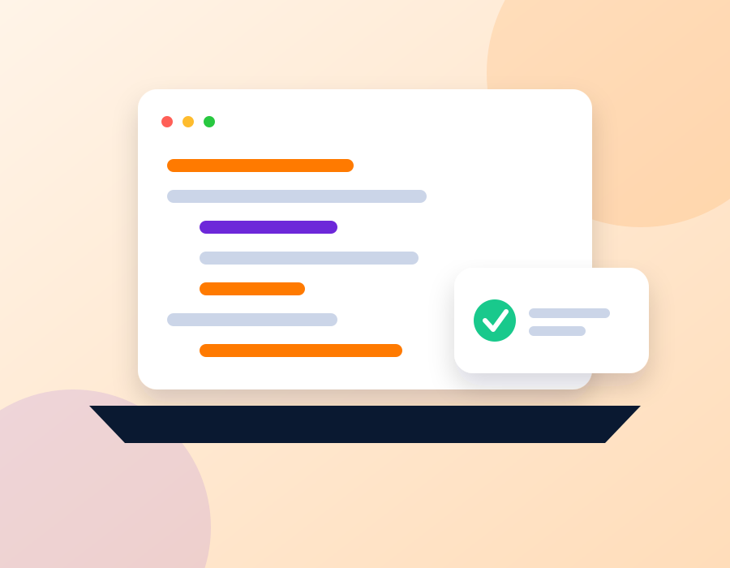
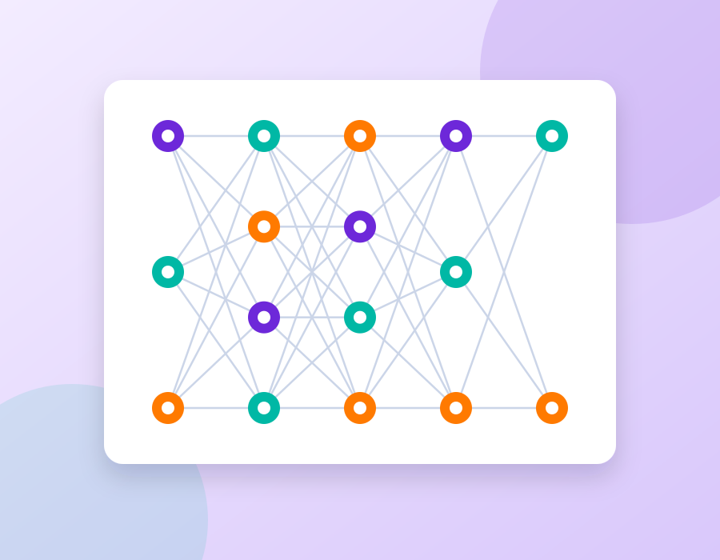
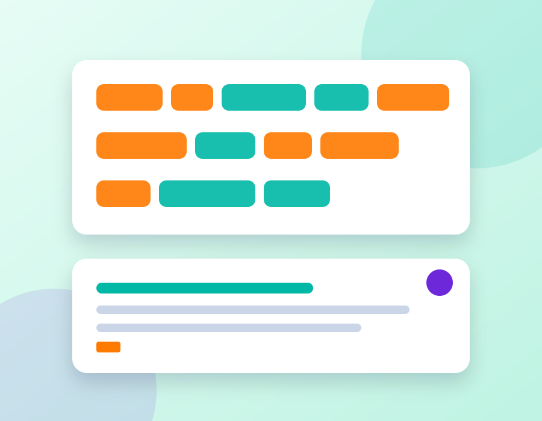
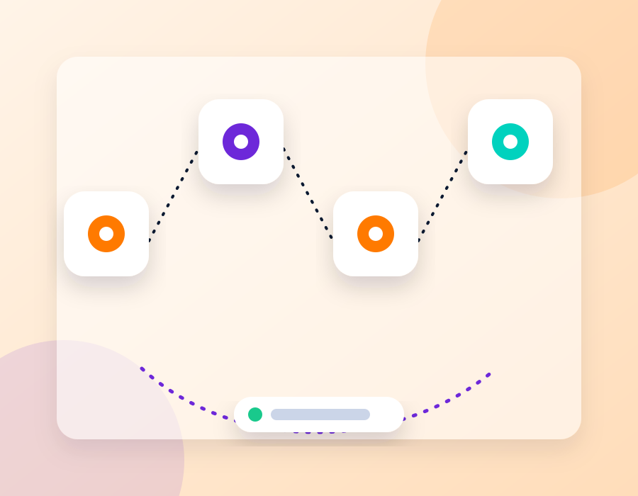
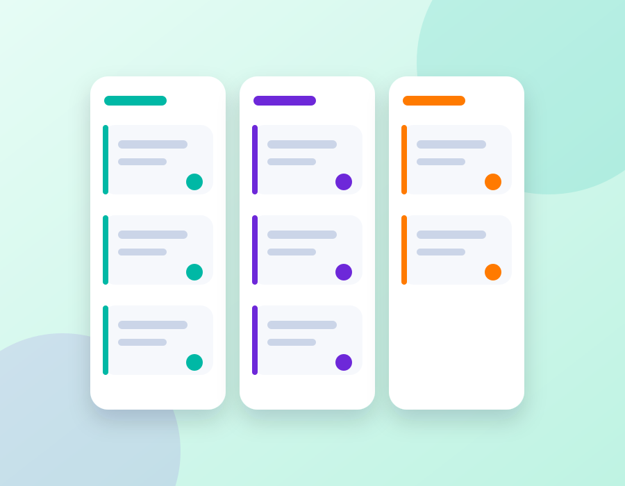
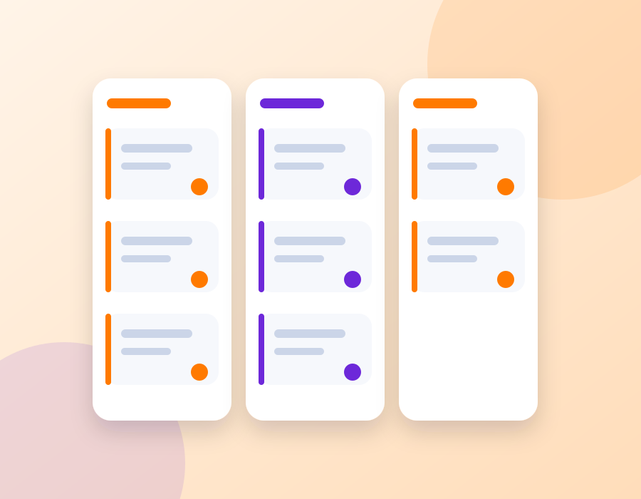
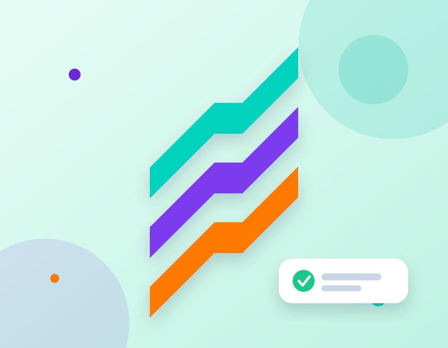

Track 1
Tech & Training for talent and companies
Tech and training that closes the gap between learning and the market.
Gen ZEE AI fills the gap between academic learning and market needs through AI experts in the field — empowering talent, and giving companies people they can hire with confidence.
150+Talents trained
85%Placement rate
2Hiring partners
8+Expert mentors
Built for talent and companies
Two commercial paths. One standard: market-ready AI capability.

Training that makes you hireable
Turn academic knowledge into a profile companies will hire. Train on the tracks the market recruits for, get mentored by AI practitioners, and enter partner pipelines with proof.
Explore talent trainingHire and train with less risk
Hiring from open CVs is slow and expensive. 72% of employers cannot fill skilled roles. We deliver talent trained and validated by AI practitioners.
Explore company solutionsMobicaBEDO
Closing the talent gap
Gen ZEE AI fill the gap between academic learning and market needs through AI Expert in AI field to empower the talents.
The AI skills gap is a hiring crisis
- 72% of employers report difficulty filling skilled roles; in 2026 AI overtook engineering and IT as the hardest skill to find.
- AI job demand has grown about 21% a year since 2019; 44% of executives say missing in-house AI expertise slows adoption.
- 46% of leaders name skill gaps as a primary barrier to shipping AI.
- Graduates leave with theory, not messy data, evaluation and deployment.
Sources: ManpowerGroup 2026; Bain & Company 2025; McKinsey 2025.
A market-ready talent pipeline
- Market-aligned tracks in ML, Deep Learning, LLM, Agentic AI and Computer Vision.
- Mentorship and validation by AI practitioners — proven before the interview.
- A placement path with partners such as Mobica and BEDO.
AI learning tracks
Five market-aligned tracks. No filler weeks or levels — only the skills companies recruit for.

Track 2
Deep Learning

Track 3
LLM

Track 4
Agentic AI
Track 5
Computer Vision
What we offer
Training for talent. Hiring and upskilling for companies. One ecosystem.
AI learning tracks
Five tracks mapped to the roles companies compete to fill.
Practitioner assessment
Experts validate what talent can ship.
Career placement
A hiring path with Mobica and BEDO.
Mentorship
One-to-one guidance from AI practitioners.

Market-shaped projects
Portfolio work on messy data, evaluation and deployment.
Corporate training
Upskill the teams you already employ.
How it works
From training to validated placement.
Step 1
Train
Join a track with practitioner-reviewed projects.

Step 2
Build
Ship portfolio work that reflects production AI.
Step 3
Validate
Prove readiness through expert assessment.
Step 4
Close gaps
Follow a focused plan for what is still missing.
Step 5
Place
Enter partner hiring conversations.
Graduate stories
Talent who moved from academic learning to market-ready AI work.
“I graduated with strong theory but froze in technical interviews. The gap roadmap showed me what the market actually expects.”
“Mentorship and human validation helped me prove my skills were industry-ready, not only academic.”
“Practical projects and employer-facing assessment are what finally got me hired.”
“Hands-on LLM work, code reviews and interview prep tied to what employers hire for.”
“I saw my readiness score and fixed the weak spots my degree never covered before applying.”
“I was validated against industry standards, not exam grades. That clarity changed my approach.”
Common questions
Clear answers for talent and for companies.
What is Gen ZEE AI?
A tech and training company for talent and companies. We fill the gap between academic learning and market needs through AI experts in the field.
Which tracks can talent join?
Machine Learning, Deep Learning, LLM, Agentic AI and Computer Vision.
How do I get started as talent?
Send us a message and choose “Talent”. We will guide you to the right track.
How can my company hire through Gen ZEE AI?
Contact us as a company. We match validated talent to your roles, or train your existing team.
Do you offer corporate AI training?
Yes. We upskill the teams you already employ with the same market-aligned programs.
What is your placement rate?
85% of our trained talent has been placed with hiring partners.
Tech & Training for talent and companies
Ready to train talent — or hire it?
Gen ZEE AI fills the gap between academic learning and market needs through AI experts in the field.

85%placement rate150+talents trained